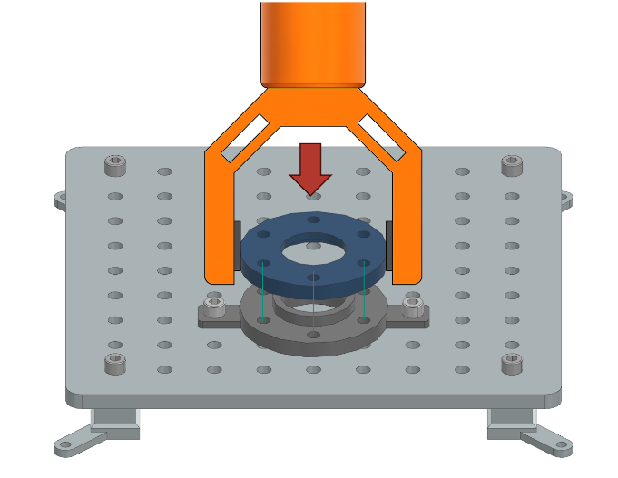
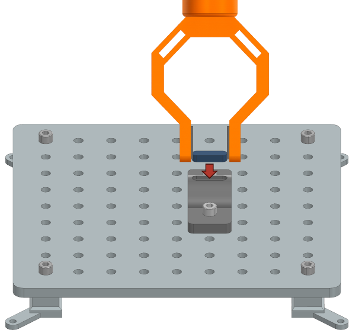
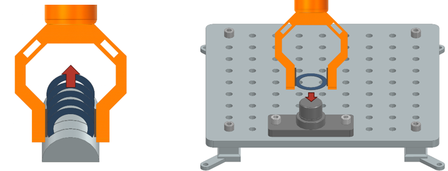
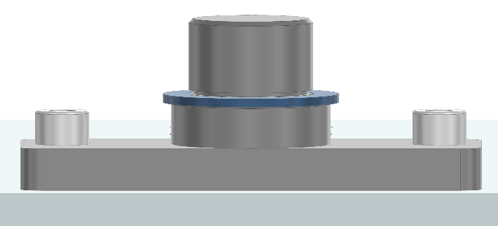

Pick and Place Tasks
This section provides the task descriptions for the Pick and Place task module of the industrial assembly challenge taskboard. The module consists of three tasks: Housing Parts, Feather Key, and Shim Ring placement. The focus here is on adaptivity, the robot needs to sense the assembly to determine the correct placement and alignment of parts, rather than reaching a fixed target pose like in the Peg-in-Hole task.
A sample taskboard with all three tasks finished is shown below, where the robot has successfully completed all tasks by placing the parts in the correct positions and orientations.

Task 1: Housing Parts
Description:
In real-world assembly, parts often need to be aligned based on subtle visual cues or features that are difficult to detect, rather than relying solely on fixed orientations or clearly visible holes as in simple “peg-in-hole” problems. This task simulates such a scenario where the robot must align two housing parts based on matching features, such as drill holes and flange surfaces, which may not be perfectly aligned or visible to the robot’s sensors. A housing part is placed on a flat surface next to the Taskboard. Another housing part is already mounted on the Taskboard. The robot must pick up the loose housing part and place it centrally on top of the mounted part, ensuring correct alignment.
{kind=link}
Test Objective:
This task evaluates the robot’s ability to grasp, transport, and precisely align components with matching features, simulating assembly operations that require accurate positioning and orientation.
Success Criteria:
The housing part is placed on top of the mounted component with parallel alignment.
The distance between the two flange surfaces is exactly 2 mm.
The center axes of the aligned drill holes match, with a maximum rotational deviation of 1°.
The housing part remains stationary after placement.
Task 2: Feather Key
Description:
A feather key is a small, rectangular metal component used to connect rotating machine elements, such as gears or pulleys, to a shaft, ensuring torque transmission while allowing for easy assembly and disassembly. Feather keys fit into matching grooves (keyways) on both the shaft and the mating part, providing a secure, non-permanent connection.
In this task, a feather key is placed on a flat surface next to the Taskboard. T he robot must pick up the feather key and insert it vertically into the groove of a shaft mounted on the Taskboard.
{kind=link}
Test Objective:
This task evaluates the robot’s ability to handle small parts, perform precise insertions, and maintain control during placement.
Success Criteria:
The feather key is fully inserted into the groove on the shaft.
The feather key remains stationary after the robot releases it.
Task 3: Shim Ring
Description:
Shim rings are thin, precisely manufactured rings used in industry to adjust the axial position or spacing between machine components, ensuring correct alignment, preload, or clearance. In industrial settings, the required number of shim rings can vary depending on component tolerances, wear, or assembly variations. Therefore, the robot must autonomously determine how many shim rings to stack to reach the correct height—specifically, up to but not covering the groove on the shaft. This reflects real-world scenarios where automated systems must adapt to part variability and ensure assemblies meet strict tolerance requirements without manual intervention.
{kind=link}
Test Objective:
This task evaluates the robot’s ability to not just perform repetitive pick-and-place operations, but follow them to reach a specified target height as required in many industrial assembly tasks. In this case it autonomously determine when to stop based on a visual reference.
Success Criteria:
Four shim rings are stacked onto the shaft, reaching the groove without covering it.
The number of shim rings is determined autonomously by the robot.
All placed shim rings remain stationary after placement.
A sample rendering of this state is shown below, where the robot has successfully placed four shim rings on the shaft, reaching the groove without covering it.
{kind=link}